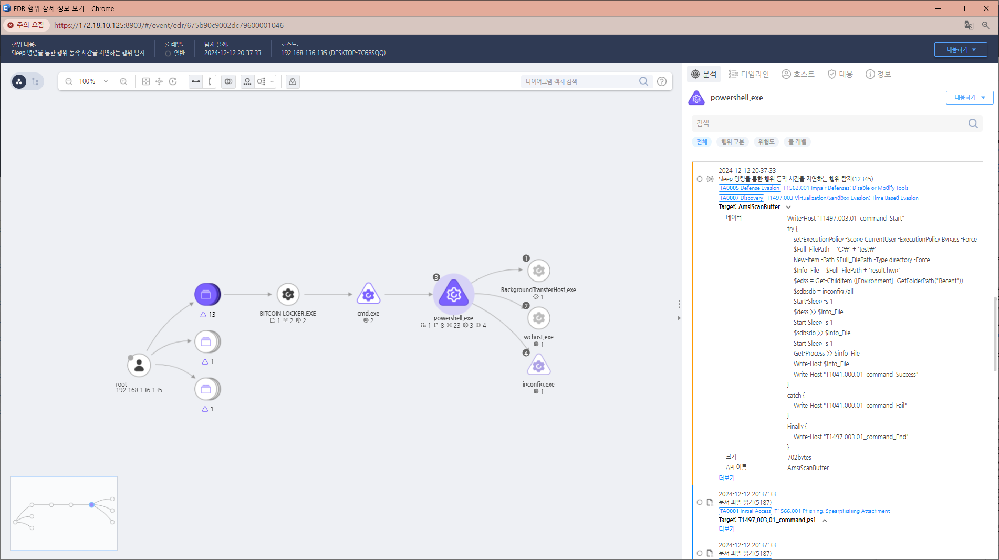

T1497.003.01 Time Based Evasion
D3FEND
MITRE ATT&CK 액션을 기준으로 대응 방안을 작성
Detection
- process_name:powershell.exe AND
- Action : AmsiScanData AND
- AmsiScanBuffer : "Start-Sleep -s "
Detection(EDR)

Response
- 공격자가 생성한 파일을 삭제합니다.
- 공격자에 의해 PC가 제어되었을 가능성이 있으므로 호스트 네트워크를 격리합니다.
Mitigations
- 시간 기반 회피 탐지 및 모니터링
- 비정상적 지연 탐지:
- 프로세스 실행 중 비정상적인 대기 시간(예: sleep, wait) 감지.
- Event ID 4688로 의심스러운 프로세스 실행 모니터링.
- 스크립트 로깅:
- PowerShell Script Block Logging 활성화(Event ID 4104)로 시간 지연 명령(Start-Sleep, Timeout) 탐지.
- 명령줄에서 ping을 사용한 지연 확인.
- 코드 실행 제한
- AppLocker 및 WDAC 설정:
- 인증되지 않은 스크립트 및 바이너리의 실행을 제한.
- 동적 분석 환경 강화
- 가상 환경 탐지 우회 방지:
- 가상 머신 및 샌드박스 환경에서 타임스탬프 왜곡을 방지하여 회피 시도 무력화.
- 고속 실행 옵션:
- 분석 환경에서 시간 흐름을 가속화하는 도구 사용(예: Time dilation).
- 네트워크 트래픽 분석
- 통신 지연 또는 이상 패턴(일정 시간 간격으로 발생하는 트래픽)을 탐지.
- 정책 강화 및 백엔드 로그 비교
- 시스템 로그와 네트워크 로그를 비교하여 시간 차이 기반의 비정상적인 동작 탐지.
- 교육 및 시뮬레이션
- 보안 팀에 시간 기반 회피 기술 시나리오 교육.
- 테스트 환경에서 회피 기법에 대한 모의 공격 시뮬레이션 수행.
Affected Techniques
Action 실행시 함꼐 영향을 받는 다른 Techniqes
| D3FEND |
| D3-PM Platform Monitoring |
| D3-DA Dynamic Analysis |